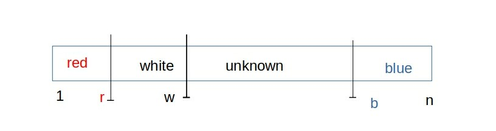

Dutch National Flag Problem
1 Prelude
This is a "Correct by Design" example from the book by Dijkstra. This example is used as an early example to illustrate our expectations in using assertions.
2 Problem
An array a[1..n] is filled with elements colored red, white or blue.
Design an algorithm that rearranges the elements so that all the
red-elements are at the left, all the blues are at the right, and the
whites are in the middle.
2.1 Non-functional Requirements
- Do not assume that (i) red, white and blue are named integer constants; (ii) nor that red < white < blue.
- We are expecting an O(n) algorithm.
2.2 Assertions
Focus on assertions.
3 Specs
We are going to be quite loose, for now, on our notation. Notes on "Assertions 101" has more details.
- RWB is a set, RWB ::= {red, white, blue}.
- a[x .. y] stands for [a[x], a[x+1], …, a[y]]. If x > y, a[x .. y] is empty.
- Is n > 0?
- a[i] is-in RWB. For all i. This is known as the entry assertion. Also called a pre-condition.
- As bags, original a equals final a. Original a is the array a as the algorithm is entered, final a is the same array a as the algorithm is exited. This is known as the exit assertion. Also called a post-condition.
- A bag is similar to a set, but may have duplicates.
4 Implementation
Here is an implementation so that you can relate to our discussion of correct-by-design.
/*@ pre: Exercise */ r = w = 0; b = n+1; while /*@ LI:: a[1..r] is-red and a[r+1 .. w] is-white and a[b..n] is-blue */ (w+1 < b) { switch (a[w+1]) { case white: w ++; break; case red: w ++; exchange(w, r+1); // exchange a[w] with a[r+1]; break; case blue: b --; exchange (w+1, b); // exchange a[w+1] with a[b]; break; } } /*@ post:: w+1 == b and a[1..r] is-red and a[r+1 .. w] is-white and a[b..n] is-blue */
- exchange(i, j) is a method not shown above. Equiv to
{temp = a[i]; a[i] = a[j]; a[j] = temp;} - The location of LI is immediately after the "while" token.
- The while loop terminates because the
b - wgap guaranteedly decreases in every iteration. - Exercise: Explain why/how the LI remains valid after each of the switch-cases.
- Exercise: It does have a pre-condition. Left it to you as a simple exercise.
- Exercise: Make a complete C++ program out of the above. Include main method, and several tests. Use enumeration to declare the array elements.
- Exercise: An enumeration declaration can force that red < white < blue. Can we use sorting to solve this problem?
5 Correct by Design
- How do/did we arrive at a/the solution?
- "Weaken" the post-condition. Use the weakened post-condition as the
loop invariant LI.
- From the post, omit w+1 == b

Figure 1: Illustrated Loop Invariant
- In every iteration the LI after each iteration is stronger than
what it was before.
- Is the white region larger?
- Is the red region larger?
- Is the blue region larger?
- One or more of the above must happen.
- The gap b - w should decrease.
- Design-by-Contract: Develop code S so that {LI-before} S {LI-after} [And, make sure that Li-before is not equivalent to Li-after.]
- Exercise: What is meant by "stronger" in general? E.g., if A implies B, between the two, which is stronger?
- Exercise: Correct by design is related to Design by Contract. How? Explain in a short paragraph.
6 References
- Dijkstra, Edsger Wybe, A Discipline of Programming, Prentice-Hall, 1976. A classic book. Includes many examples of Correct by Design. Dijkstra is a Turing Award Winner 1972. Reference.
- Prabhaker Mateti, Notes on "Correct by Design" ../../Design/correct-by-design.html
- Prabhaker Mateti, Notes on "Design by Contract (DbC)" ../../Design/design-by-contract.html
- Prabhaker Mateti, Notes on "Assertions 101" ../../Assertions/assertions-101.html